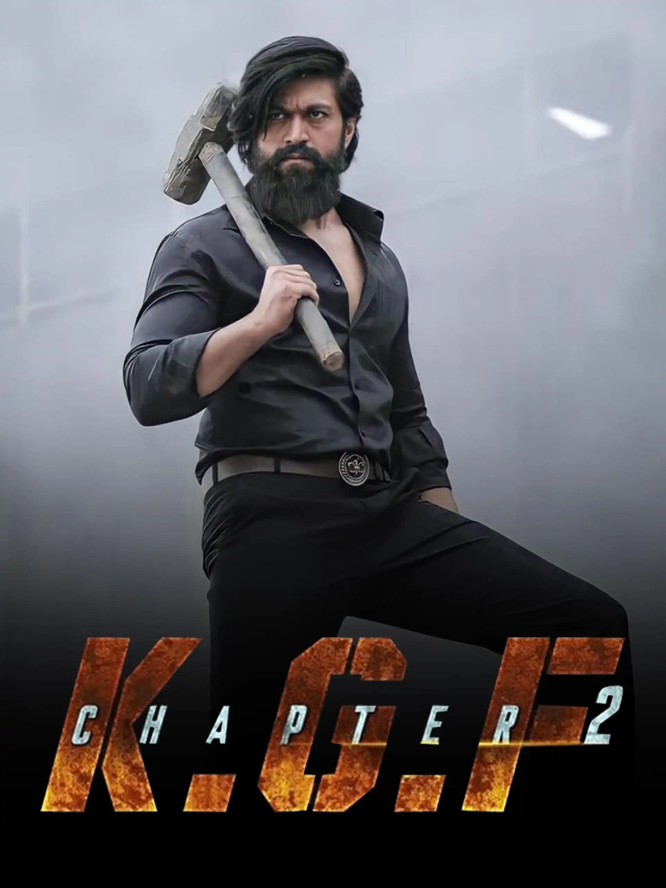
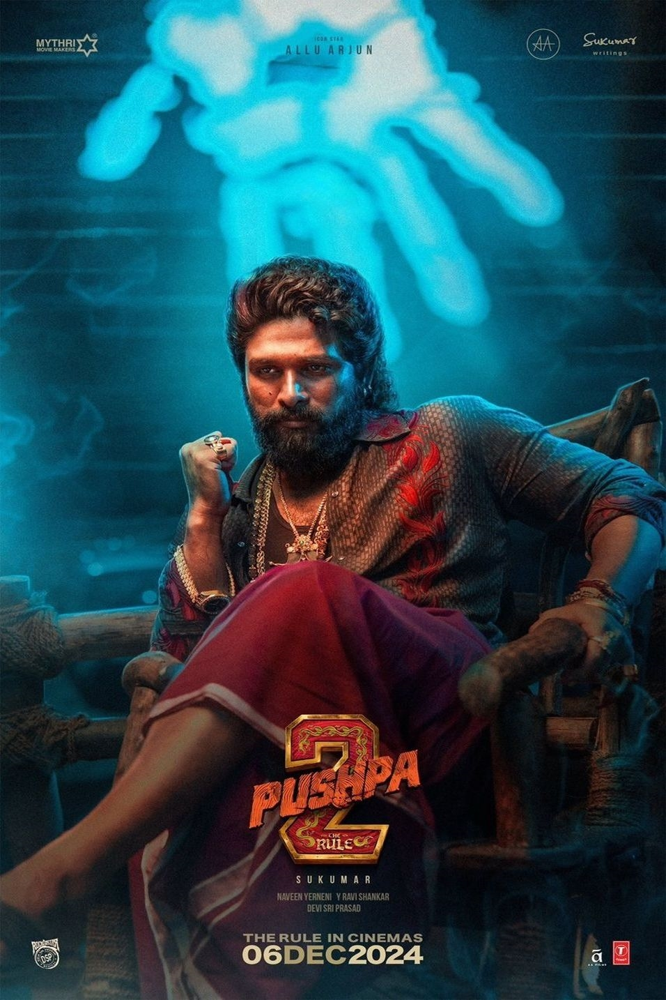

Salaar: Part 1 – Ceasefire is a 2023 Indian Telugu-language epic action thriller film directed by Prashanth Neel and produced by Vijay Kiragandur under Hombale Films. The film stars Prabhas in the titular role, alongside Prithviraj Sukumaran, Shruti Haasan, Jagapathi Babu, Bobby Simha, Sriya Reddy, Ramachandra Raju, John Vijay, Easwari Rao, Tinnu Anand, Devaraj, Brahmaji and Mime Gopi. In the fictional dystopian city-state of Khansaar, where monarchy still exists, the film follows the friendship between Deva (Prabhas), the exiled prince of Khansaar, and Varadha (Prithviraj Sukumaran), the current prince of Khansaar. When a coup d'état is planned by his father's ministers and his relatives, Varadha enlists Deva's help to become Khansaar's undisputed ruler.
The film's initial storyline was pitched from Neel's debut film Ugramm (2014) and is the maiden part of a two-part film.[4] It was officially announced in December 2020 under the title Salaar, however, in July 2023, its first installment was titled as Salaar: Part 1 – Ceasefire. Principal photography commenced in January 2021, and occurred sporadically in several legs over nearly three years, before wrapping in late 2023. Filming locations included Telangana, Italy and Budapest. Production difficulties, ranging from the pandemic, reshoots and VFX delays, postponed Salaar's release date several times. The music is composed by Ravi Basrur, cinematography handled by Bhuvan Gowda and editing by Ujwal Kulkarni.

KGF: Chapter 2 is a 2022 Indian Kannada-language period action film[20] written and directed by Prashanth Neel, and produced by Vijay Kiragandur under his Hombale Films banner. It serves as the direct sequel to KGF: Chapter 1 (2018), as well as the second installment in the KGF franchise. The film stars an ensemble cast of Yash, Sanjay Dutt, Raveena Tandon, Srinidhi Shetty, Prakash Raj, Achyuth Kumar, Rao Ramesh, Vasishta N. Simha, Ayyappa P. Sharma, Archana Jois, Saran Shakti, Easwari Rao, John Kokken, T. S. Nagabharana and Malavika Avinash. Produced on a budget of ₹100 crore, KGF: Chapter 2 was at the time of release the most expensive Kannada film ever made. Neel retained the technicians from its predecessor with Bhuvan Gowda handling the cinematography and Ravi Basrur composed the film score and songs. Dutt and Tandon joined the cast in early 2019, marking the former's Kannada film debut. Portions of the film were shot simultaneously with Chapter 1. Principal photography for the rest of the sequences commenced in March 2019, but was halted in March 2020 owing to the COVID-19 lockdown in India. Filming resumed five months later in August 2020 and was completed in December 2020. Locations included Bangalore, Hyderabad, Mysore and Kolar.

Pushpa 2: The Rule is a 2024 Indian Telugu-language action drama film[8] written and directed by Sukumar and produced by Mythri Movie Makers in association with Sukumar Writings. A sequel to Pushpa: The Rise (2021), it is the second installment in the Pushpa film series. The film stars Allu Arjun in the titular role, alongside Rashmika Mandanna, Fahadh Faasil, Jagapathi Babu, Sunil and Rao Ramesh. It follows Pushpa Raj, a labourer-turned-red sandalwood smuggler, as he faces growing threats from his enemies, including SP Bhanwar Singh Shekhawat. The sequel was officially announced in December 2021, shortly before the release of the first film, with the title Pushpa 2 and later rebranded as Pushpa 2: The Rule with the release of the first film. Although a portion of the film was initially shot back-to-back with the first film, director Sukumar revised the storyline, leading to principal photography beginning in October 2022. The film features music composed by Devi Sri Prasad, cinematography by Mirosław Kuba Brożek, and editing by Naveen Nooli. Made on a budget of ₹400–500 crore,it is among the most expensive Indian films ever produced. With a runtime of 200–224 minutes,it is also one of the longest Indian films.